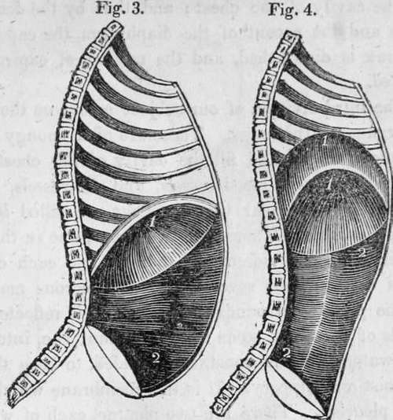

Chapter XVIII. Respiration
Description
This section is from the book "Human Physiology For The Use Of Elementary Schools", by Charles Alfred Lee. Also available from Amazon: Human Physiology, for the Use of Elementary Schools.
Chapter XVIII. Respiration
1. By Respiration, is meant the process of taking air into the lungs and throwing it out again. Inspiration is the act of drawing the air in ; expiration, that of forcing it out. Respiration is essential to all animal existence. It is in the lungs that the last change is produced in the assimilation of the food, by which it is converted into that vital fluid, which carries life, and strength, and nourishment to every fibre in the animal system.
2. The parts concerned in respiration may be arranged into three divisions, viz., 1, the bones which form the respiratory cavity; 2, the muscles by which these bones are moved, and the size of the cavity regulated ; 3, the respiratory organs contained within the cavity.
Thorax, or chest; a, the sternum ; b, b, the spine ; c, c, the ribs.
3. The bones which enter into the composition of the chest, are the sternum, or breast bone ; twelve dorsal vertebrae, and twenty four ribs. By examining the preceding plate, Fig, 1., the sternum will be seen to terminate at its lower part in a triangular piece of cartilage, which lies directly over the stomach, and may be felt externally ; the seven uppermost, or true ribs, will be seen to extend the whole distance from the spine to the sternum, strips of elastic cartilage being interposed between the breast bone and their anterior extremities, while the five lower, or false ribs, are merely attached to each other by slips of cartilage ; the two lower, indeed, float loosely, without any attachment to the others, except by means of muscles. ,
4. I have already stated that the ribs are attached to the spine at an acute angle, so that they cannot be moved out of their ordinary position, without enlarging the dimensions of the chest. The articulation of the ribs, both at the spine and sternum, is effected by means of cartilage, thus allowing sufficient degree of motion for the purposes of respiration in a healthy state. The chest expands during inspiration for the reception of air ; and during expiration, it contracts to expel air, which is no longer useful. There are, therefore, two motions required, an upward and an outward; the first increases the distance between the spine and sternum ; the last, that between the ribs. Now these motions are both effected by the ribs, and they are so articulated, that they cannot perform the one without the other. By looking at the cut, then, it will readily be seen how where the ribs rise, the sternum will be pushed out, and of course the cavity of the chest enlarged.
5. The Muscles
All the muscles which are attached to the bones just described, aid more or less in respiration, though the intercostal muscles are those chiefly concerned. These run from one rib to another, filling up the spaces between them. These muscles, though thin, consist of a double layer of fibres, the external and the internal, which pass in inverse directions, one layer from above downwards, the other from behind forwards, from edge to edge of the ribs, crossing each other. Now, the first rib being fixed, the second moveable, but less so than the third, the third less than the fourth, and so on through the whole series; the contraction of the intercostals must consequently elevate the whole series, as the upper ribs serve as fixed points for the action of the muscles.
6. The chief muscle, however, of respiration, is the diaphragm. By the aid of this, the capacity of the chest is enlarged downwards, as we have seen it to have been upwards and outwards by that of the ribs. The diaphragm, or midriff, is a circular muscle, placed transversely across the trunk, nearly at its centre, dividing the cavity of the thorax from that of the abdomen. It is attached to the inside of the breast bone and the cartilages of the false ribs, and is fleshy all around its border, but tendinous towards its centre; the surface towards the abdomen is concave, and that towards the chest convex. Even when it is not in action, its upper surface forms an arch, the convexity of which is towards the thorax, and reaches as high as the fourth rib. The central, or tendinous portion of the diaphragm, is attached to the pericardium supporting the heart; and is nearly, or quite immoveable, in order to afford a fixed point for the action of the muscular fibres, which constitute its sides. Owing to this arrangement, its motions do not interfere with those of the heart.
View of the diaphragm ; 1, cavity of the thorax ; 2, diaphragm separating the cavity of the thorax from that of the abdomen ; 3, cavity of the pelvis.
7. During the act of inspiration, the diaphragm contracts ; the muscular fibres shorten themselves, and the muscle descends, passing from the fourth rib to below the seventh, losing the arched form, as represented in the cut. At the same time, the muscles of the abdomen are protruded forwards, and the viscera in its cavity pushed downwards. The degree in which the capacity of the chest is enlarged by these movements is very satisfactorily shown in the following cut.
diaphragm in its state of greatest descent in inspiration; 2, muscles of the abdomen, showing the extent of their protrusion in the action of inspiration. Fig IV, diaphragm in the state of its greatest ascent in expiration; 2, muscles of the abdomen in action forcing the viscera and diaphragm upwards.
8. We have now seen how the capacity of the chest is enlarged by inspiration, how is its capacity diminished by expiration ? The descent of the ribs is occasioned by the elasticity of the cartilages and ligaments which join them to the sternum and the spine. Indeed the natural condition of the chest is that which obtains after a full expiration ; and therefore we may consider the bones which form the walls of the chest, and the muscles which cover those bones, as anatagonizing or opposite forces. The ribs, then, have a natural tendency to fall, owing to their peculiar structure, as well as their position; while their expansion is effected by the specific action of their muscles. Besides this, when the diaphragm relaxes, the abdominal muscles contract and push the abdominal viscera, and the diaphragm also, up towards the cavity of the chest; and thus by the descent of the ribs and the ascent of the diaphragm, the capacity of the thorax is diminished, and the motion of expiration is completed.
Continue to:
Tags
humans, anatomy, skeleton, bones, physiology, organs, nerves, brain